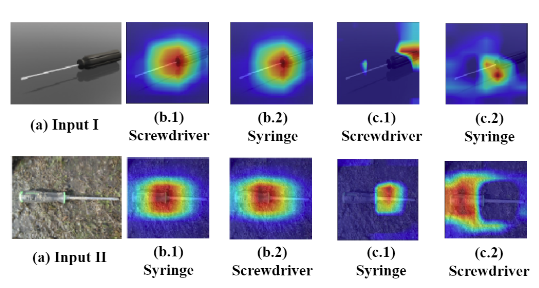
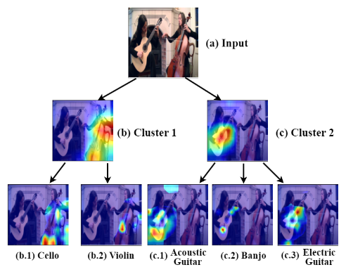
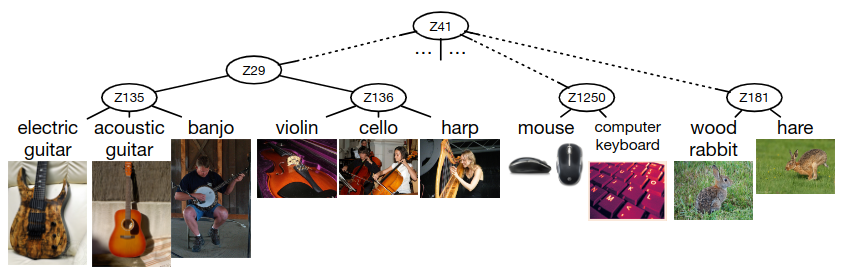

Contrasive Explanations for Deep Learning Models
A New Paradigm in Explainable AI
A picture is worth more than a thousand words, but what if you could understand the words behind the picture? Recently, I came across an interesting paper, Two-Stage Holistic and Contrastive Explanation of Image Classification in the field of Explainable AI. The paper talks about how using contrastive explanations and second order gradient information, we can have better explanations for Deep Learning models, specially in multi-object and multi-class settings.
First order Gradient based methods such as Grad-CAM, LIME, SHAP, etc. have been widely used for explaining deep learning models. These methods provide insights into the model's decision-making process by highlighting the most relevant parts of the input data. However, they often lack contrastive explanations, which compare the model's predictions for different classes or inputs. Contrastive explanations are essential for understanding why a model chooses class A and not class B. The paper introduces a novel framework called Contrastive Weighted Output eXplanation (CWOX) that generates contrastive explanations by leveraging second-order gradient information. CWOX provides a more holistic view of the model's decision-making process, enabling users to understand not only what the model predicts but also why it makes those predictions.
The field has also seen progress in explainability for deep learning models, particularly through techniques like attention mechanisms and saliency maps. Attention mechanisms, initially popularized in natural language processing, highlight which parts of the input data the model is focusing on when making a prediction. Saliency maps visualize the areas in an image that most influence the model’s decision, providing insights into the model's behavior in computer vision tasks. These techniques make it easier to debug models and ensure they are learning the right patterns from the data.
In addition to technical advancements, there is a growing emphasis on the human aspect of XAI. Researchers are increasingly considering the end-user's perspective, ensuring that explanations are not only technically sound but also comprehensible and actionable for non-experts. This has led to the development of user-centered design principles for XAI, aiming to tailor explanations to the specific needs of different user groups, from engineers to business stakeholders. Interactive visualization tools are being created to help users explore and understand AI models dynamically.
Finally, regulatory and ethical considerations are driving the push for explainable AI. Laws like the General Data Protection Regulation (GDPR) in Europe mandate transparency in automated decision-making systems, compelling organizations to adopt XAI methods. Ethical AI frameworks stress the importance of accountability, fairness, and transparency, recognizing that explainability is crucial for ensuring that AI systems are trustworthy and do not inadvertently reinforce biases. As a result, explainable AI is not just a technical challenge but a multidisciplinary endeavor, requiring collaboration between technologists, ethicists, and policymakers to build AI systems that are both powerful and transparent.